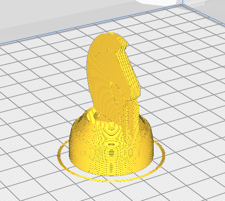
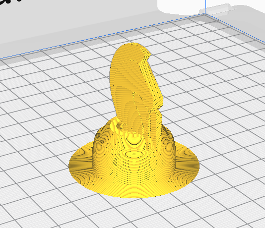
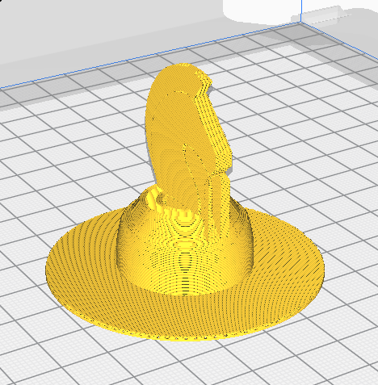

3D printing
Here we learn how 3D printing works, and test one with the Knight chess piece we made previously.
.png)
Here we learn how 3D printing works, and test one with the Knight chess piece we made previously.
Some stuff to take note of when printing models. These can affect the printing time and the print quality:
Height of each layer of plastic extruded. Thinner layers give smother and finer prints with higher resolution, but printing time will be longer as there are more layers.
For a 3D printer with a 0.4 nozzle, the layer height ranges from 0.1mm to 0.4mm .
The minimum thickness a print should have at any time. A thinner wall would make it more fragile. However thicker wall would use more material and will take longer to print.
Infill is used for solid parts of a model. Instead of wasting material to print a full solid, a repetitive structure is used fill the otherwise empty space. The weight of the print can also be affected by the infill.
Amount of infill is specified by percentage. Higher percentage will make the model stronger, but takes more time to print and can make the model heavier.
There are also many different infill patterns you can choose.
Used to aid in printing overhangs.
Supports can be removed after the print is complete. Best is to start removing when the print is fresh or it might be harder to peel off when cool.
You can also avoid using supports by orientating the print such that the parts are no longer suspended.
The print bed is usually heated to improve adhesion, so the print would not fall over or move from its original position.
For prints with a flat base that can support itself, Skirts are used.

Skirts draws an outline around the print, no adhesion. It also helps prime the extruder before printing.

Brim prints an outline around the object that touches the its edges. It can prevent warping and help with bed adhesion.

Raft creates a full platform to support the model. It helps create a strong foundation for models with small bases. The print adhesion if onto the raft instead of the bed.
Using this knight chess piece design can be used to demonstrate several basic features of 3D design and printing:
The printer software reads STL (stereolithography) files, so we must first convert the cad file.
Right click the item and "Save as STL".
.png)
Open the printer software, here we use Ultimaker CURA. Open the STL file.
.png)
For this print here are the print settings i used:
I also downscaled the figure to 70% to make it smaller.
.png)
And then I sent the file to the printer to print - took 19 minutes to print the piece.
.png)
The printer first discharges some melted filament at the corner to clean the nozzle. Then it starts with the skirt and starts printing the figure layer by layer.

And the piece is printed and let to cool before removing from the print board.

Here is the piece fresh from the printer.


Then I used a file to remove the remains and here is the final piece:


Overall the printing is pretty good, other than it being quite small (about 2cm in diameter) but that makes the printing time fast.
The supports were hard to remove. possibly due to the small size but filing can be used to remove the supports stuck onto the piece.
The base is also pretty clean.